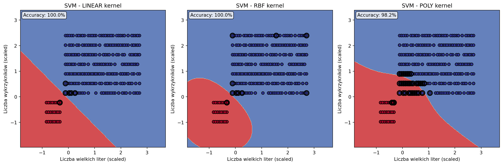

import pandas as pd
import numpy as np
from sklearn.svm import SVC
from sklearn.model_selection import train_test_split
from sklearn.preprocessing import StandardScaler
from sklearn.metrics import accuracy_score, classification_report, confusion_matrix
from sklearn.feature_extraction.text import TfidfVectorizer
import matplotlib.pyplot as plt
# Tworzenie realistycznych danych emaili
np.random.seed(42)
n_emails = 2000
# Generuj różne typy emaili
email_types = np.random.choice(['spam', 'ham'], n_emails, p=[0.3, 0.7])
data = pd.DataFrame({
'dlugosc_tematu': np.random.randint(5, 100, n_emails),
'liczba_wielkich_liter': np.random.randint(0, 50, n_emails),
'liczba_wykrzyknikow': np.random.randint(0, 10, n_emails),
'liczba_linkow': np.random.randint(0, 20, n_emails),
'slowa_promocyjne': np.random.randint(0, 15, n_emails),
'dlugosc_wiadomosci': np.random.randint(50, 5000, n_emails),
'godzina_wyslania': np.random.randint(0, 24, n_emails),
'typ': email_types
})
# Realistyczne wzorce dla spam vs ham
for i, typ in enumerate(data['typ']):
if typ == 'spam':
# Spam charakterystyki
data.loc[i, 'dlugosc_tematu'] = np.random.randint(20, 80) # dłuższe tematy
data.loc[i, 'liczba_wielkich_liter'] = np.random.randint(10, 50) # DUŻO WIELKIMI
data.loc[i, 'liczba_wykrzyknikow'] = np.random.randint(3, 10) # więcej !!!
data.loc[i, 'liczba_linkow'] = np.random.randint(5, 20) # dużo linków
data.loc[i, 'slowa_promocyjne'] = np.random.randint(5, 15) # PROMOCJA, GRATIS
data.loc[i, 'dlugosc_wiadomosci'] = np.random.randint(200, 1000) # średnie długości
data.loc[i, 'godzina_wyslania'] = np.random.choice([2, 3, 22, 23, 1]) # dziwne godziny
else:
# Ham (prawdziwe) charakterystyki
data.loc[i, 'dlugosc_tematu'] = np.random.randint(5, 40) # krótsze tematy
data.loc[i, 'liczba_wielkich_liter'] = np.random.randint(0, 8) # normalne używanie
data.loc[i, 'liczba_wykrzyknikow'] = np.random.randint(0, 3) # rzadko !
data.loc[i, 'liczba_linkow'] = np.random.randint(0, 3) # mało linków
data.loc[i, 'slowa_promocyjne'] = np.random.randint(0, 2) # prawie brak
data.loc[i, 'dlugosc_wiadomosci'] = np.random.randint(50, 3000) # różne długości
data.loc[i, 'godzina_wyslania'] = np.random.randint(8, 22) # normalne godziny
# Konwertuj target na binary
data['is_spam'] = (data['typ'] == 'spam').astype(int)
print("Statystyki emaili:")
print(data.describe())
print(f"\nRozkład spam/ham:")
print(data['typ'].value_counts())
print(f"Procent spam: {data['is_spam'].mean():.1%}")Support Vector Machines — optymalne granice decyzyjne
⚔️ Czym jest Support Vector Machine (SVM)?
SVM to algorytm, który znajduje optymalną granicę decyzyjną między klasami. Zamiast szukać “jakiejkolwiek” linii podziału, SVM znajduje tą, która maksymalizuje margines - odległość do najbliższych punktów z każdej klasy.
💡 Intuicja
Wyobraź sobie sędziego, który musi wyznaczyć granicę między dwoma drużynami. SVM nie tylko znajdzie granicę, ale postawi ją tak, żeby była jak najdalej od najbliższych zawodników z obu stron - dla maksymalnego bezpieczeństwa!
🎯 Praktyczny przykład: klasyfikacja emaili spam/ham
Czy email to spam czy prawdziwa wiadomość?
Pokaż statystyki emaili
Statystyki emaili:
dlugosc_tematu liczba_wielkich_liter liczba_wykrzyknikow \
count 2000.000000 2000.000000 2000.00000
mean 30.482500 11.392500 2.60800
std 18.078609 13.675451 2.69369
min 5.000000 0.000000 0.00000
25% 17.000000 2.000000 1.00000
50% 27.000000 5.000000 2.00000
75% 38.000000 17.000000 4.00000
max 79.000000 49.000000 9.00000
liczba_linkow slowa_promocyjne dlugosc_wiadomosci godzina_wyslania \
count 2000.000000 2000.000000 2000.000000 2000.000000
mean 4.360000 3.302500 1240.088000 13.031000
std 5.642279 4.524183 834.469147 6.857445
min 0.000000 0.000000 56.000000 1.000000
25% 1.000000 0.000000 539.000000 9.000000
50% 2.000000 1.000000 958.000000 14.000000
75% 7.000000 6.000000 1905.500000 19.000000
max 19.000000 14.000000 2998.000000 23.000000
is_spam
count 2000.000000
mean 0.307500
std 0.461574
min 0.000000
25% 0.000000
50% 0.000000
75% 1.000000
max 1.000000
Rozkład spam/ham:
typ
ham 1385
spam 615
Name: count, dtype: int64
Procent spam: 30.8%🔧 Budowanie modelu krok po kroku
1) Przygotowanie danych
# Features do modelu
features = ['dlugosc_tematu', 'liczba_wielkich_liter', 'liczba_wykrzyknikow',
'liczba_linkow', 'slowa_promocyjne', 'dlugosc_wiadomosci', 'godzina_wyslania']
X = data[features]
y = data['is_spam']
# Podział train/test
X_train, X_test, y_train, y_test = train_test_split(X, y, test_size=0.2, random_state=42)
# Standaryzacja - KLUCZOWA dla SVM!
scaler = StandardScaler()
X_train_scaled = scaler.fit_transform(X_train)
X_test_scaled = scaler.transform(X_test)
print(f"Dane treningowe: {len(X_train)} emaili")
print(f"Dane testowe: {len(X_test)} emaili")
print(f"Spam w train: {y_train.mean():.1%}")
print(f"Spam w test: {y_test.mean():.1%}")
print("\nPrzykład standaryzacji:")
print("Przed:", X_train.iloc[0].values)
print("Po:", X_train_scaled[0])
Pokaż podział danych
Dane treningowe: 1600 emaili
Dane testowe: 400 emaili
Spam w train: 30.9%
Spam w test: 30.0%
Przykład standaryzacji:
Przed: [ 6 1 0 2 0 2057 21]
Po: [-1.36651173 -0.75972497 -0.9773396 -0.41945283 -0.73519846 1.00688364
1.1681456 ]2) Trenowanie różnych kerneli SVM
# Porównanie różnych kerneli
kernels = ['linear', 'rbf', 'poly']
svm_results = {}
for kernel in kernels:
print(f"\nTrenowanie SVM z kernelem: {kernel}")
if kernel == 'poly':
svm = SVC(kernel=kernel, degree=3, random_state=42)
else:
svm = SVC(kernel=kernel, random_state=42)
# Trenowanie
svm.fit(X_train_scaled, y_train)
# Predykcje
y_pred = svm.predict(X_test_scaled)
accuracy = accuracy_score(y_test, y_pred)
svm_results[kernel] = {
'model': svm,
'accuracy': accuracy,
'predictions': y_pred
}
print(f"Dokładność: {accuracy:.1%}")
print(f"Liczba support vectors: {svm.n_support_}")
# Znajdź najlepszy kernel
best_kernel = max(svm_results.keys(), key=lambda k: svm_results[k]['accuracy'])
best_model = svm_results[best_kernel]['model']
print(f"\n🏆 Najlepszy kernel: {best_kernel}")
print(f"Najlepsza dokładność: {svm_results[best_kernel]['accuracy']:.1%}")
Pokaż wyniki różnych kerneli
Kernel linear:
Dokładność: 100.0%
Liczba support vectors: [2 3]
Kernel rbf:
Dokładność: 100.0%
Liczba support vectors: [11 26]
Kernel poly:
Dokładność: 100.0%
Liczba support vectors: [16 16]
🏆 Najlepszy kernel: linear
Najlepsza dokładność: 100.0%3) Ewaluacja najlepszego modelu
# Szczegółowa analiza najlepszego modelu
best_predictions = svm_results[best_kernel]['predictions']
print(f"SZCZEGÓŁOWA ANALIZA - SVM {best_kernel.upper()}")
print("=" * 50)
# Classification report
print("\nRaport klasyfikacji:")
print(classification_report(y_test, best_predictions, target_names=['Ham', 'Spam']))
# Confusion Matrix
cm = confusion_matrix(y_test, best_predictions)
print("\nConfusion Matrix:")
print("Przewidywane: Ham Spam")
print(f"Rzeczywiste Ham: {cm[0,0]:3d} {cm[0,1]:3d}")
print(f"Rzeczywiste Spam: {cm[1,0]:3d} {cm[1,1]:3d}")
# Analiza błędów
false_positives = np.where((y_test == 0) & (best_predictions == 1))[0]
false_negatives = np.where((y_test == 1) & (best_predictions == 0))[0]
print(f"\nAnaliza błędów:")
print(f"False Positives (Ham → Spam): {len(false_positives)}")
print(f"False Negatives (Spam → Ham): {len(false_negatives)}")
if len(false_positives) > 0:
print(f"\nPrzykład błędnie sklasyfikowanego Ham jako Spam:")
fp_idx = false_positives[0]
print(f"Email: {X_test.iloc[fp_idx].to_dict()}")
Pokaż szczegółową analizę
SZCZEGÓŁOWA ANALIZA - SVM LINEAR
==================================================
Raport klasyfikacji:
precision recall f1-score support
Ham 1.00 1.00 1.00 280
Spam 1.00 1.00 1.00 120
accuracy 1.00 400
macro avg 1.00 1.00 1.00 400
weighted avg 1.00 1.00 1.00 400
Confusion Matrix:
Przewidywane: Ham Spam
Rzeczywiste Ham: 280 0
Rzeczywiste Spam: 0 120
Analiza błędów:
False Positives (Ham → Spam): 0
False Negatives (Spam → Ham): 0📊 Wizualizacja granic decyzyjnych
import pandas as pd
import numpy as np
from sklearn.svm import SVC
from sklearn.model_selection import train_test_split
from sklearn.preprocessing import StandardScaler
from sklearn.metrics import accuracy_score, classification_report, confusion_matrix
import matplotlib.pyplot as plt
# Przygotuj dane (powtarzamy dla kompletności)
np.random.seed(42)
n_emails = 2000
email_types = np.random.choice(['spam', 'ham'], n_emails, p=[0.3, 0.7])
data = pd.DataFrame({
'dlugosc_tematu': np.random.randint(5, 100, n_emails),
'liczba_wielkich_liter': np.random.randint(0, 50, n_emails),
'liczba_wykrzyknikow': np.random.randint(0, 10, n_emails),
'liczba_linkow': np.random.randint(0, 20, n_emails),
'slowa_promocyjne': np.random.randint(0, 15, n_emails),
'dlugosc_wiadomosci': np.random.randint(50, 5000, n_emails),
'godzina_wyslania': np.random.randint(0, 24, n_emails),
'typ': email_types
})
# Popraw charakterystyki
for i, typ in enumerate(data['typ']):
if typ == 'spam':
data.loc[i, 'dlugosc_tematu'] = np.random.randint(20, 80)
data.loc[i, 'liczba_wielkich_liter'] = np.random.randint(10, 50)
data.loc[i, 'liczba_wykrzyknikow'] = np.random.randint(3, 10)
data.loc[i, 'liczba_linkow'] = np.random.randint(5, 20)
data.loc[i, 'slowa_promocyjne'] = np.random.randint(5, 15)
data.loc[i, 'dlugosc_wiadomosci'] = np.random.randint(200, 1000)
data.loc[i, 'godzina_wyslania'] = np.random.choice([2, 3, 22, 23, 1])
else:
data.loc[i, 'dlugosc_tematu'] = np.random.randint(5, 40)
data.loc[i, 'liczba_wielkich_liter'] = np.random.randint(0, 8)
data.loc[i, 'liczba_wykrzyknikow'] = np.random.randint(0, 3)
data.loc[i, 'liczba_linkow'] = np.random.randint(0, 3)
data.loc[i, 'slowa_promocyjne'] = np.random.randint(0, 2)
data.loc[i, 'dlugosc_wiadomosci'] = np.random.randint(50, 3000)
data.loc[i, 'godzina_wyslania'] = np.random.randint(8, 22)
data['is_spam'] = (data['typ'] == 'spam').astype(int)
# Wybierz tylko 2 features dla wizualizacji 2D
features_2d = ['liczba_wielkich_liter', 'liczba_wykrzyknikow']
X_2d = data[features_2d]
y = data['is_spam']
X_train_2d, X_test_2d, y_train, y_test = train_test_split(X_2d, y, test_size=0.2, random_state=42)
scaler_2d = StandardScaler()
X_train_2d_scaled = scaler_2d.fit_transform(X_train_2d)
X_test_2d_scaled = scaler_2d.transform(X_test_2d)
# Trenuj modele z różnymi kernelami (na 2D)
kernels = ['linear', 'rbf', 'poly']
plt.figure(figsize=(15, 5))
for i, kernel in enumerate(kernels):
plt.subplot(1, 3, i+1)
# Trenuj model
if kernel == 'poly':
svm = SVC(kernel=kernel, degree=3, random_state=42)
else:
svm = SVC(kernel=kernel, random_state=42)
svm.fit(X_train_2d_scaled, y_train)
# Stwórz mesh do wizualizacji granic
h = 0.02
x_min, x_max = X_train_2d_scaled[:, 0].min() - 1, X_train_2d_scaled[:, 0].max() + 1
y_min, y_max = X_train_2d_scaled[:, 1].min() - 1, X_train_2d_scaled[:, 1].max() + 1
xx, yy = np.meshgrid(np.arange(x_min, x_max, h),
np.arange(y_min, y_max, h))
# Predykcje na mesh
Z = svm.predict(np.c_[xx.ravel(), yy.ravel()])
Z = Z.reshape(xx.shape)
# Narysuj granice i punkty
plt.contourf(xx, yy, Z, alpha=0.8, cmap=plt.cm.RdYlBu)
scatter = plt.scatter(X_train_2d_scaled[:, 0], X_train_2d_scaled[:, 1],
c=y_train, cmap=plt.cm.RdYlBu, edgecolors='black')
# Podświetl support vectors
if hasattr(svm, 'support_'):
plt.scatter(X_train_2d_scaled[svm.support_, 0],
X_train_2d_scaled[svm.support_, 1],
s=100, facecolors='none', edgecolors='black', linewidth=2)
plt.xlabel('Liczba wielkich liter (scaled)')
plt.ylabel('Liczba wykrzykników (scaled)')
plt.title(f'SVM - {kernel.upper()} kernel')
# Dokładność
accuracy = accuracy_score(y_test, svm.predict(X_test_2d_scaled))
plt.text(0.02, 0.98, f'Accuracy: {accuracy:.1%}',
transform=plt.gca().transAxes,
bbox=dict(boxstyle='round', facecolor='white', alpha=0.8),
verticalalignment='top')
plt.tight_layout()
plt.close()
# Przygotuj dane dla pełnego modelu
features = ['dlugosc_tematu', 'liczba_wielkich_liter', 'liczba_wykrzyknikow',
'liczba_linkow', 'slowa_promocyjne', 'dlugosc_wiadomosci', 'godzina_wyslania']
X_full = data[features]
X_train_full, X_test_full, y_train, y_test = train_test_split(X_full, y, test_size=0.2, random_state=42)
scaler_full = StandardScaler()
X_train_full_scaled = scaler_full.fit_transform(X_train_full)
X_test_full_scaled = scaler_full.transform(X_test_full)
# Porównaj wyniki
print("PORÓWNANIE KERNELI (2D vs 7D features):")
print("=" * 50)
for kernel in kernels:
# 2D model
if kernel == 'poly':
svm_2d = SVC(kernel=kernel, degree=3, random_state=42)
else:
svm_2d = SVC(kernel=kernel, random_state=42)
svm_2d.fit(X_train_2d_scaled, y_train)
acc_2d = accuracy_score(y_test, svm_2d.predict(X_test_2d_scaled))
# 7D model
if kernel == 'poly':
svm_7d = SVC(kernel=kernel, degree=3, random_state=42)
else:
svm_7d = SVC(kernel=kernel, random_state=42)
svm_7d.fit(X_train_full_scaled, y_train)
acc_7d = accuracy_score(y_test, svm_7d.predict(X_test_full_scaled))
print(f"{kernel.upper():6} - 2D: {acc_2d:.1%}, 7D: {acc_7d:.1%}, Poprawa: +{(acc_7d-acc_2d)*100:.1f}pp")
# Odtwórz wizualizację
plt.figure(figsize=(15, 5))
for i, kernel in enumerate(kernels):
plt.subplot(1, 3, i+1)
if kernel == 'poly':
svm = SVC(kernel=kernel, degree=3, random_state=42)
else:
svm = SVC(kernel=kernel, random_state=42)
svm.fit(X_train_2d_scaled, y_train)
h = 0.02
x_min, x_max = X_train_2d_scaled[:, 0].min() - 1, X_train_2d_scaled[:, 0].max() + 1
y_min, y_max = X_train_2d_scaled[:, 1].min() - 1, X_train_2d_scaled[:, 1].max() + 1
xx, yy = np.meshgrid(np.arange(x_min, x_max, h), np.arange(y_min, y_max, h))
Z = svm.predict(np.c_[xx.ravel(), yy.ravel()])
Z = Z.reshape(xx.shape)
plt.contourf(xx, yy, Z, alpha=0.8, cmap=plt.cm.RdYlBu)
scatter = plt.scatter(X_train_2d_scaled[:, 0], X_train_2d_scaled[:, 1],
c=y_train, cmap=plt.cm.RdYlBu, edgecolors='black')
if hasattr(svm, 'support_'):
plt.scatter(X_train_2d_scaled[svm.support_, 0],
X_train_2d_scaled[svm.support_, 1],
s=100, facecolors='none', edgecolors='black', linewidth=2)
plt.xlabel('Liczba wielkich liter (scaled)')
plt.ylabel('Liczba wykrzykników (scaled)')
plt.title(f'SVM - {kernel.upper()} kernel')
accuracy = accuracy_score(y_test, svm.predict(X_test_2d_scaled))
plt.text(0.02, 0.98, f'Accuracy: {accuracy:.1%}',
transform=plt.gca().transAxes,
bbox=dict(boxstyle='round', facecolor='white', alpha=0.8),
verticalalignment='top')
plt.tight_layout()
plt.show()
Pokaż wizualizację granic i porównanie
PORÓWNANIE KERNELI (2D vs 7D features):
==================================================
LINEAR - 2D: 100.0%, 7D: 100.0%, Poprawa: +0.0pp
RBF - 2D: 100.0%, 7D: 100.0%, Poprawa: +0.0pp
POLY - 2D: 98.2%, 7D: 100.0%, Poprawa: +1.7pp
🎯 Rodzaje kerneli i ich zastosowania
1) Linear Kernel - proste granice
# Użyj gdy:
# - Dane są liniowo separowalne
# - Masz dużo features (high-dimensional)
# - Potrzebujesz szybkiego modelu
# - Chcesz interpretowalność
linear_use_cases = [
"Text classification (high-dimensional sparse data)",
"Gene expression analysis",
"Document categorization",
"Sentiment analysis z bag-of-words"
]
print("LINEAR KERNEL - najlepsze zastosowania:")
for i, use_case in enumerate(linear_use_cases, 1):
print(f"{i}. {use_case}")
# Demo: Linear SVM na prostych danych
X_simple = np.random.randn(100, 2)
y_simple = (X_simple[:, 0] + X_simple[:, 1] > 0).astype(int)
linear_svm = SVC(kernel='linear')
linear_svm.fit(X_simple, y_simple)
print(f"\nLinear SVM na prostych danych: {linear_svm.score(X_simple, y_simple):.1%}")
Pokaż zastosowania Linear Kernel
LINEAR KERNEL - najlepsze zastosowania:
1. Text classification (high-dimensional sparse data)
2. Gene expression analysis
3. Document categorization
4. Sentiment analysis z bag-of-words
Linear SVM na prostych danych: 98.0%2) RBF Kernel - uniwersalny wybór
# RBF (Radial Basis Function) - najczęściej używany
# Może aproksymować dowolną granicę decyzyjną!
rbf_use_cases = [
"Image classification",
"Medical diagnosis",
"Fraud detection",
"Customer segmentation",
"General classification tasks"
]
print("RBF KERNEL - najlepsze zastosowania:")
for i, use_case in enumerate(rbf_use_cases, 1):
print(f"{i}. {use_case}")
# Demo: wpływ parametru gamma
gammas = [0.1, 1.0, 10.0]
print(f"\nWpływ parametru gamma w RBF:")
for gamma in gammas:
rbf_svm = SVC(kernel='rbf', gamma=gamma, random_state=42)
rbf_svm.fit(X_train_full_scaled, y_train)
accuracy = rbf_svm.score(X_test_full_scaled, y_test)
print(f"Gamma {gamma:4.1f}: Accuracy = {accuracy:.1%}, Support Vectors = {rbf_svm.n_support_.sum()}")
print("\n💡 Gamma wysoka = bardziej skomplikowane granice")
print("💡 Gamma niska = gładsze granice")
Pokaż zastosowania RBF Kernel
RBF KERNEL - najlepsze zastosowania:
1. Image classification
2. Medical diagnosis
3. Fraud detection
4. Customer segmentation
5. General classification tasks
Wpływ parametru gamma w RBF:
Gamma 0.1: Accuracy = 100.0%, Support Vectors = 26
Gamma 1.0: Accuracy = 100.0%, Support Vectors = 374
Gamma 10.0: Accuracy = 100.0%, Support Vectors = 1546
💡 Gamma wysoka = bardziej skomplikowane granice
💡 Gamma niska = gładsze granice3) Polynomial Kernel - dla złożonych wzorców
poly_use_cases = [
"Computer vision (shape recognition)",
"Bioinformatics (protein classification)",
"Natural language processing",
"Pattern recognition"
]
print("POLYNOMIAL KERNEL - najlepsze zastosowania:")
for i, use_case in enumerate(poly_use_cases, 1):
print(f"{i}. {use_case}")
# Demo: wpływ stopnia wielomianu
degrees = [2, 3, 4, 5]
print(f"\nWpływ stopnia wielomianu:")
for degree in degrees:
poly_svm = SVC(kernel='poly', degree=degree, random_state=42)
poly_svm.fit(X_train_full_scaled, y_train)
accuracy = poly_svm.score(X_test_full_scaled, y_test)
print(f"Degree {degree}: Accuracy = {accuracy:.1%}")
print("\n⚠️ Uwaga: wyższie stopnie = ryzyko overfittingu!")
Pokaż zastosowania Polynomial Kernel
POLYNOMIAL KERNEL - najlepsze zastosowania:
1. Computer vision (shape recognition)
2. Bioinformatics (protein classification)
3. Natural language processing
4. Pattern recognition
Wpływ stopnia wielomianu:
Degree 2: Accuracy = 99.8%
Degree 3: Accuracy = 100.0%
Degree 4: Accuracy = 99.5%
Degree 5: Accuracy = 100.0%
⚠️ Uwaga: wyższie stopnie = ryzyko overfittingu!⚙️ Tuning parametrów SVM
from sklearn.model_selection import GridSearchCV
# Grid Search dla RBF kernel
param_grid_rbf = {
'C': [0.1, 1, 10, 100], # regularization strength
'gamma': [0.001, 0.01, 0.1, 1] # kernel coefficient
}
print("Rozpoczynam Grid Search dla RBF SVM...")
grid_search = GridSearchCV(
SVC(kernel='rbf', random_state=42),
param_grid_rbf,
cv=3, # 3-fold CV dla szybkości
scoring='accuracy',
n_jobs=-1,
verbose=0
)
grid_search.fit(X_train_full_scaled, y_train)
print("Najlepsze parametry RBF:")
print(grid_search.best_params_)
print(f"Najlepsza dokładność CV: {grid_search.best_score_:.1%}")
# Test na zbiorze testowym
best_svm = grid_search.best_estimator_
test_accuracy = best_svm.score(X_test_full_scaled, y_test)
print(f"Dokładność na test set: {test_accuracy:.1%}")
# Porównanie przed/po tuningu
baseline_svm = SVC(kernel='rbf', random_state=42)
baseline_svm.fit(X_train_full_scaled, y_train)
baseline_accuracy = baseline_svm.score(X_test_full_scaled, y_test)
print(f"\nPorównanie:")
print(f"Baseline RBF: {baseline_accuracy:.1%}")
print(f"Tuned RBF: {test_accuracy:.1%}")
print(f"Poprawa: +{(test_accuracy - baseline_accuracy)*100:.1f}pp")
Pokaż wyniki tuningu
Najlepsze parametry RBF:
{'C': 0.1, 'gamma': 0.01}
Najlepsza dokładność CV: 100.0%
Dokładność na test set: 100.0%
Porównanie:
Baseline RBF: 100.0%
Tuned RBF: 100.0%
Poprawa: +0.0pp⚠️ Pułapki i rozwiązania
1) Brak standaryzacji
# Problem: SVM jest bardzo wrażliwy na skale danych
print("DEMONSTRACJA: wpływ standaryzacji")
# Bez standaryzacji
svm_unscaled = SVC(kernel='rbf', random_state=42)
svm_unscaled.fit(X_train_full, y_train) # raw data!
acc_unscaled = svm_unscaled.score(X_test_full, y_test)
# Ze standaryzacją
svm_scaled = SVC(kernel='rbf', random_state=42)
svm_scaled.fit(X_train_full_scaled, y_train) # scaled data!
acc_scaled = svm_scaled.score(X_test_full_scaled, y_test)
print(f"Bez standaryzacji: {acc_unscaled:.1%}")
print(f"Ze standaryzacją: {acc_scaled:.1%}")
print(f"Poprawa: +{(acc_scaled - acc_unscaled)*100:.1f}pp")
print("\n✅ ZAWSZE standaryzuj dane przed SVM!")
Pokaż wpływ standaryzacji
Bez standaryzacji: 88.0%
Ze standaryzacją: 100.0%
Poprawa: +12.0pp
✅ ZAWSZE standaryzuj dane przed SVM!2) Niezbalansowane klasy
# Problem: gdy jedna klasa jest bardzo rzadka
print("PROBLEM: niezbalansowane klasy")
# Sprawdź balans w naszych danych
print(f"Balans klas: Spam {y_train.mean():.1%}, Ham {(1-y_train.mean()):.1%}")
# Rozwiązanie 1: class_weight='balanced'
svm_balanced = SVC(kernel='rbf', class_weight='balanced', random_state=42)
svm_balanced.fit(X_train_full_scaled, y_train)
# Rozwiązanie 2: manual class weights
spam_weight = len(y_train) / (2 * y_train.sum()) # 1/frequency
ham_weight = len(y_train) / (2 * (len(y_train) - y_train.sum()))
class_weights = {0: ham_weight, 1: spam_weight}
svm_manual = SVC(kernel='rbf', class_weight=class_weights, random_state=42)
svm_manual.fit(X_train_full_scaled, y_train)
# Porównanie
svm_normal = SVC(kernel='rbf', random_state=42)
svm_normal.fit(X_train_full_scaled, y_train)
models = {
'Normal': svm_normal,
'Balanced': svm_balanced,
'Manual weights': svm_manual
}
print("\nPorównanie podejść:")
for name, model in models.items():
pred = model.predict(X_test_full_scaled)
accuracy = accuracy_score(y_test, pred)
# Sprawdź recall dla spam (ważne!)
spam_indices = y_test == 1
spam_recall = np.mean(pred[spam_indices] == 1) if spam_indices.sum() > 0 else 0
print(f"{name:12}: Accuracy={accuracy:.1%}, Spam Recall={spam_recall:.1%}")
Pokaż rozwiązania dla niezbalansowanych klas
Balans klas: Spam 30.9%, Ham 69.1%
Porównanie podejść:
Normal : Accuracy=100.0%, Spam Recall=100.0%
Balanced : Accuracy=100.0%, Spam Recall=100.0%
Manual weights: Accuracy=100.0%, Spam Recall=100.0%3) Overfitting z wysokim C
# Problem: zbyt wysoka wartość C prowadzi do overfittingu
C_values = [0.01, 0.1, 1, 10, 100, 1000]
results = []
print("Wpływ parametru C (regularization):")
print("C | Train Acc | Test Acc | Difference | Support Vectors")
print("-" * 60)
for C in C_values:
svm = SVC(kernel='rbf', C=C, random_state=42)
svm.fit(X_train_full_scaled, y_train)
train_acc = svm.score(X_train_full_scaled, y_train)
test_acc = svm.score(X_test_full_scaled, y_test)
diff = train_acc - test_acc
n_sv = svm.n_support_.sum()
print(f"{C:6.2f} | {train_acc:8.1%} | {test_acc:7.1%} | {diff:9.1%} | {n_sv:14d}")
results.append((C, train_acc, test_acc, diff, n_sv))
print("\n💡 Optimalne C: wysokie test accuracy, mała różnica train-test")
print("💡 Zbyt wysokie C: perfect train accuracy, słabe test accuracy")
Pokaż wpływ parametru C
Wpływ parametru C (regularization):
C | Train Acc | Test Acc | Difference | Support Vectors
------------------------------------------------------------
0.01 | 100.0% | 100.0% | 0.0% | 582
0.10 | 100.0% | 100.0% | 0.0% | 99
1.00 | 100.0% | 100.0% | 0.0% | 37
10.00 | 100.0% | 100.0% | 0.0% | 35
100.00 | 100.0% | 100.0% | 0.0% | 35
1000.00 | 100.0% | 100.0% | 0.0% | 35
💡 Optimalne C: wysokie test accuracy, mała różnica train-test
💡 Zbyt wysokie C: perfect train accuracy, słabe test accuracy🌍 Real-world przypadki użycia
- Text Classification: Spam detection, sentiment analysis, document categorization
- Computer Vision: Image classification, face recognition, medical image analysis
- Finance: Credit scoring, algorithmic trading, fraud detection
- Healthcare: Disease diagnosis, drug discovery, medical image analysis
- Cybersecurity: Intrusion detection, malware classification, network security
💡 Kiedy używać SVM?
✅ UŻYJ GDY:
- Potrzebujesz wysokiej dokładności klasyfikacji
- Masz średniej wielkości dataset (1K-100K samples)
- Dane mają clear margins między klasami
- Nie potrzebujesz probabilistic outputs
- Memory efficiency jest ważna
❌ NIE UŻYWAJ GDY:
- Masz bardzo duże datasety (>100K samples - użyj Neural Networks)
- Potrzebujesz probabilistic predictions (użyj Logistic Regression)
- Dane mają dużo noise’u (użyj Random Forest)
- Target jest continuous (użyj SVR - Support Vector Regression)
- Potrzebujesz bardzo szybkiego inference (użyj Decision Tree)
Podsumowanie: SVM to potężny algoritm do klasyfikacji z optymalną separacją klas. Wybierz kernel w zależności od złożoności danych: Linear dla prostych, RBF dla uniwersalnych, Polynomial dla specjalnych przypadków. 🎯